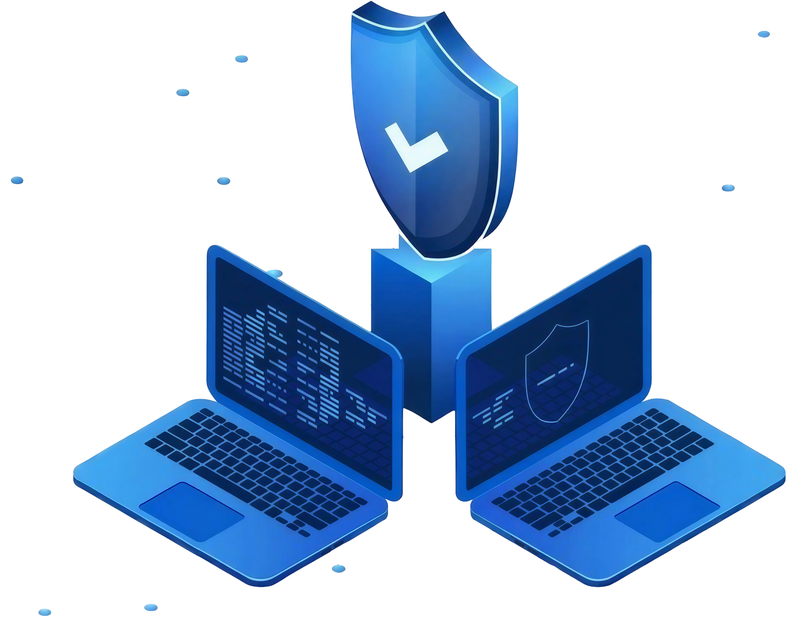

Oferecemos serviços
de TI para as empresas,
priorizando segurança,
suporte e qualidade.
Possuímos conhecimento técnico
para cuidar da TI da sua empresa com segurança e eficiência.

Gerenciamento de Servidores
Segurança e Monitoramento de Dados
Backup e Recuperação de Dados

Excelência e Compromisso
Garantimos segurança total, disponibilidade contínua e proteção avançada dos sistemas da sua empresa.
Conosco, sua empresa estará sempre um passo à frente, com tecnologia que protege, otimiza e transforma seus resultados.
Saiba Mais Sobre Nossa AbordagemEmpresas que confiam na InfoPrime
Nossas Soluções em TI
Residências
Wi-Fi Seguro • Redes Domésticas • Suporte Remoto
Proteção completa para seu home office e dispositivos pessoais.
Empresas
Infraestrutura Corporativa • Servidores • Monitoramento 24/7
Soluções escaláveis para crescimento e segurança empresarial.
Serviços Avulsos
Emergências • Manutenção • Consultoria
Atendimento rápido para problemas técnicos e otimizações.
Infraestrutura Corporativa de Elite
Infraestrutura de TI segura, estável e preparada para alta performance.
- Monitoramento Proativo — Detectamos e resolvemos falhas antes de impactar sua operação.
- Backup Seguro em Nuvem — Recuperação rápida e confiável dos seus dados críticos.
- Proteção Avançada — Firewall e antivírus corporativos contra ataques e invasões.
- Wi-Fi Profissional — Conexão estável, rápida e segura em toda a empresa.
- Servidores & Cloud — Gestão completa para performance, escalabilidade e controle.
Por Que Grandes Negócios Nos Escolhem
20 anos garantindo segurança e estabilidade em ambientes corporativos.